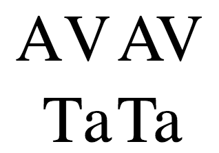

The font-kerning CSS property sets the use of the kerning information stored in a font.
Kerning defines how letters are spaced. In well-kerned fonts, this feature makes character spacing more uniform and pleasant to read than it would otherwise be.
In the image below, for instance, the examples on the left do not use kerning, while the ones on the right do:

font-kerning: auto; font-kerning: normal; font-kerning: none; /* Global values */ font-kerning: inherit; font-kerning: initial; font-kerning: revert; font-kerning: unset;
autonormalnone{{cssinfo}}
<div id="kern"></div> <div id="nokern"></div> <textarea id="input">AV T. ij</textarea>
div {
font-size: 2rem;
font-family: serif;
}
#nokern {
font-kerning: none;
}
#kern {
font-kerning: normal;
}
let input = document.getElementById('input');
let kern = document.getElementById('kern');
let nokern = document.getElementById('nokern');
input.addEventListener('keyup', function() {
kern.textContent = input.value; /* Update content */
nokern.textContent = input.value;
});
kern.textContent = input.value; /* Initialize content */
nokern.textContent = input.value;
{{ EmbedLiveSample('Enabling_and_disabling_kerning') }}
{{Compat}}